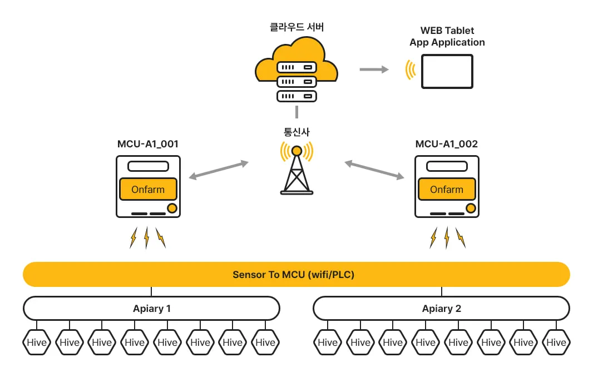
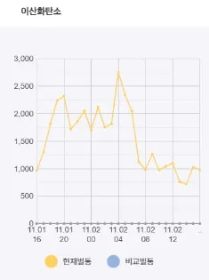
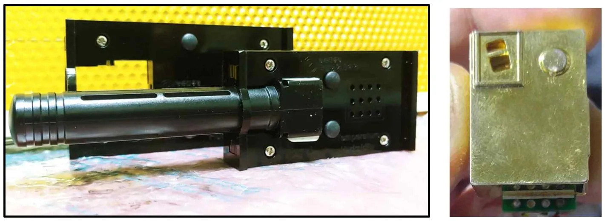

벌통 속 이산화탄소, 꿀벌 무리 살필 새 지표 될까
실내 환기에 빗대 가능성 내놓은 비온팜…‘학계·연구기관 정보 부족’ 한계도 밝혀

스마트 양봉 기업 온팜(브랜드 비온팜)은 2025년 4월 홈페이지에 공개한 소개서에서 벌통 안 이산화탄소 농도가 꿀벌 무리의 포화도와 생육환경 쾌적도를 살피는 지표로 쓰일 수 있다고 설명했다. 다만 학계와 연구기관의 관련 정보가 부족해 아직 지표로 활용되지 못하고 있다는 한계도 소개서에 함께 적었다.
실내 공기에 빗댄 설명
비온팜은 소개서에서 이산화탄소 농도 변화가 사람의 생활환경과 지구 기후변화에도 영향을 주는 요소라며 벌통 안에 모여 사는 꿀벌의 생태 활성을 살피는 지표로 쓰일 수 있다고 밝혔다. 사람이 지내는 실내 공기에 빗댄 설명도 있다. 소개서는 실내 이산화탄소 농도가 통상 2,000ppm(ppm은 100만분의 1)을 넘으면 환기가 필요할 만큼 사람에게 미치는 영향이 크다고 적었다. 이어 이 농도가 “숨을 쉬는 꿀벌의 군집 포화도와 생육환경 쾌적도를 살펴보는 지표로 사용될 수 있을 것으로 사료됨”이라고 썼다.
같은 소개서의 시스템 소개에는 “꿀벌 군집의 포화도나 쾌적도를 감지할 수 있는 CO₂ 수치 제공”이 벌통 내부 생육환경 모니터링 기능의 하나로 올라 있다. 육아(애벌레 기르기)와 저밀(꿀 저장), 분봉(무리가 나뉘어 일부가 떠나는 일) 같은 이상 징후는 온·습도 추이로 확인한다는 설명이 함께 실렸다.
하루 새 오르내린 농도
비온팜 홈페이지 제품 소개란에는 앱 화면의 ‘이산화탄소’ 그래프가 실려 있다. 11월 1일 오후 4시부터 이튿날 낮까지 벌통 1통(앱의 ‘현재벌통’)의 이산화탄소 농도를 보여 준다. 연도와 장소는 표시돼 있지 않다.
그래프에서 농도는 1일 오후 4시 1,000ppm 안팎에서 출발해 밤사이 대체로 1,500~2,500ppm 사이를 오갔다. 2일 오전 4시께 2,500ppm을 넘어 가장 높았다. 오전 7시께부터는 1,000ppm 안팎으로 내려왔고 오후 1~2시께에는 1,000ppm 아래로 떨어졌다.

그래픽: 비온팜이 홈페이지 제품 소개란에 실은 앱 이산화탄소 그래프. 노란 선(현재벌통)이 11월 1일 오후 4시부터 이튿날 낮까지의 벌통 안 이산화탄소 농도를 보여 준다 (자료: 비온팜)센서와 뉴질랜드 벌통
소개서의 제품 구성표에 따르면 비온팜 이산화탄소 센서의 측정 범위는 0~5,000ppm이고 회사가 제시한 오차는 ±50ppm+5%다. 소개서에는 ‘2018년 온·습도 및 CO₂센서’라는 설명을 단 사진도 실렸다.

사진: 비온팜이 2025년 소개서에 ‘2018년 온·습도 및 CO₂센서’로 실은 장치 (자료: 비온팜)2026년 10월 8일 확인한 결과 비온팜 홈페이지 ‘투데이 비온팜’ 화면은 벌통의 온도·습도와 이산화탄소를 대한민국·우즈베키스탄·뉴질랜드로 나눠 보도록 짜여 있다. 비온팜은 2023년 12월 11일 홈페이지 갤러리에 뉴질랜드에서 한국인이 운영하는 양봉농장 ‘Ah-Farm’에 스마트 벌통 78통을 설치했다는 소식을 올렸다. 이 벌통으로 벌통 내부의 “온도 조절과 이산화탄소의 변화 등을 통해 이상징후를 모니터링”하고 꿀 수확 시점을 예측해 농장 운영에 도움이 되기를 바란다고 적었다. 설치 소식은 뉴질랜드 한인 양봉장에 들어선 스마트 벌통 78통 기사에 자세히 실렸다.
아직 없는 지표
비온팜은 소개서에서 “아직까지 학계나 연구기관의 관련정보 부족으로 지표로서 활용되지 못하고 있는 실정임”이라고 밝혔다. 그러면서 이산화탄소 센서를 비롯한 벌통 안 공기질 데이터를 제공해 양봉 관련 연구·분석 기회를 넓힐 것으로 봤다. 쾌적한 생육환경 지표가 마련되면 꿀벌 질병 예방이나 기후변화 대응에 유효할 것으로 예상했다.
해외 연구 결과도 나왔다. 2024년 학술지 ‘어플라이드 사이언시스(Applied Sciences)’에 실린 영국 노팅엄트렌트대 Newton 등의 연구는 2022~2023년 겨울 벌통 4통에 센서를 달아 벌통 속 이산화탄소를 쟀다. 가장 추운 날에도 농도가 하루 새 크게 오르내렸고, 튼튼한 벌통 1통은 육아 상자 쪽이 1만ppm을 넘는 날이 많았다. 연구진은 이산화탄소를 지켜보면 꿀벌 무리가 무너지기 직전에 사람이 손쓸 신호를 얻을 수 있다고 봤지만, 몇 ppm부터 손을 써야 하는지 같은 기준은 내놓지 않았다. 자세한 내용은 자료실 소개에서 볼 수 있다.
자료: 비온팜 홈페이지(2026년 10월 8일 확인), 비온팜 2025 소개서, Newton 외(2024) Applied Sciences
저작권자 © 윙윙통신 무단 전재 및 재배포 금지